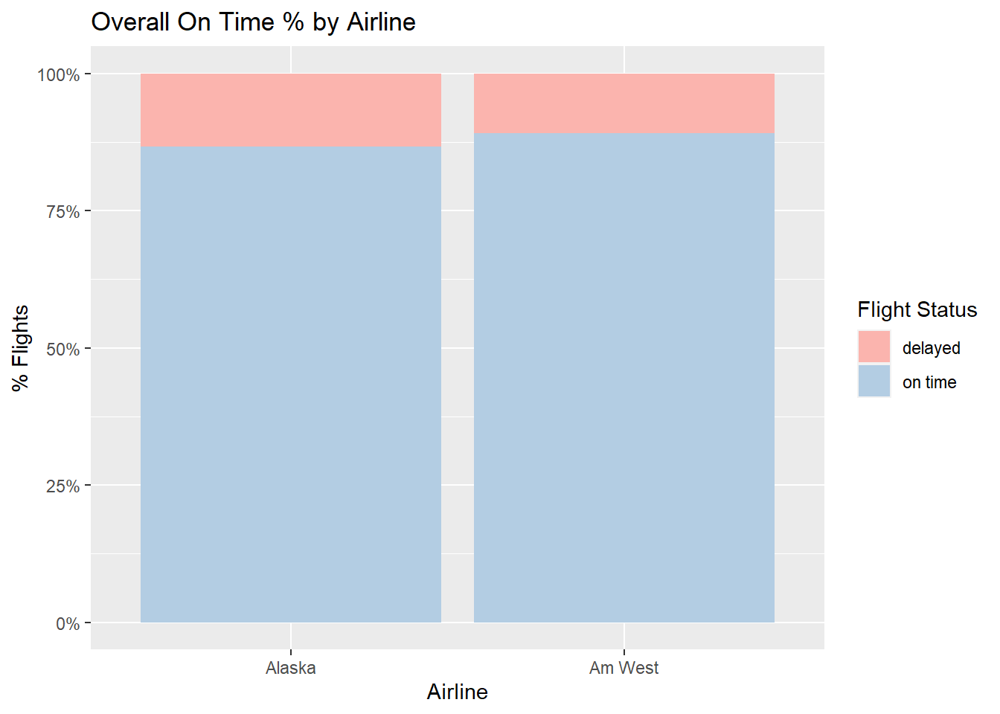
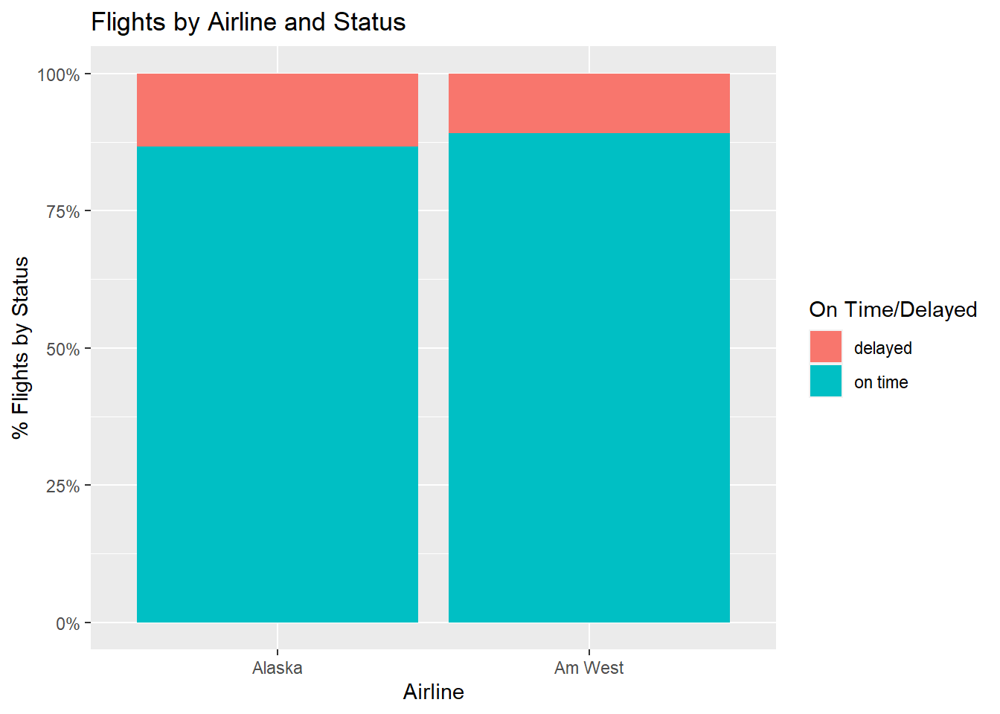
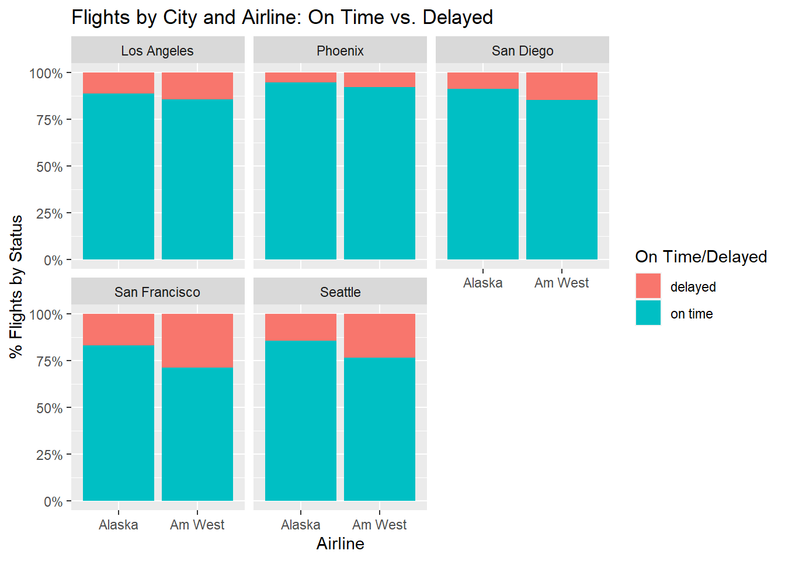

For this assignment, we were asked to create a small .csv file, load it to R, and create a tidy dataframe.
I used Excel to create the small dataset, which had several untidy issues: a blank row, missing values, values as column names (Cities), and variables in rows (On Time and Delayed). I saved this as a .csv file to Github.
Importing the Data
In R, I began by loading the libraries and reading in the text file from Github:
library(tidyverse)
── Attaching core tidyverse packages ──────────────────────── tidyverse 2.0.0 ──
✔ dplyr 1.1.4 ✔ readr 2.1.5
✔ forcats 1.0.0 ✔ stringr 1.5.1
✔ ggplot2 3.4.4 ✔ tibble 3.2.1
✔ lubridate 1.9.3 ✔ tidyr 1.3.0
✔ purrr 1.0.2
── Conflicts ────────────────────────────────────────── tidyverse_conflicts() ──
✖ dplyr::filter() masks stats::filter()
✖ dplyr::lag() masks stats::lag()
ℹ Use the conflicted package (<http://conflicted.r-lib.org/>) to force all conflicts to become errors
Rows: 5 Columns: 7
── Column specification ────────────────────────────────────────────────────────
Delimiter: ","
chr (2): Airline, On Time/Delayed
dbl (5): Los Angeles, Phoenix, San Diego, San Francisco, Seattle
ℹ Use `spec()` to retrieve the full column specification for this data.
ℹ Specify the column types or set `show_col_types = FALSE` to quiet this message.
df
# A tibble: 5 × 7
Airline `On Time/Delayed` `Los Angeles` Phoenix `San Diego` `San Francisco`
<chr> <chr> <dbl> <dbl> <dbl> <dbl>
1 Alaska on time 497 221 212 503
2 <NA> delayed 62 12 20 102
3 <NA> <NA> NA NA NA NA
4 Am West on time 694 4840 383 320
5 <NA> delayed 117 415 65 129
# ℹ 1 more variable: Seattle <dbl>
Filter: Delete Blank Row
I used the filter function to remove the blank row based on NA in the Los Angeles column. This is a small dataset, so I could see that this filter would identify all blank rows and not inadvertently delete a row with values in other columns.
In the case of a larger dataset or if I were creating a repeatable process where I could not be sure that a blank in the Los Angeles field would always indicate a blank row, I could have written this to validate that all fields were NA before deleting the row, but that wasn’t necessary here.
df <- df %>%filter(!is.na(`Los Angeles`))df
# A tibble: 4 × 7
Airline `On Time/Delayed` `Los Angeles` Phoenix `San Diego` `San Francisco`
<chr> <chr> <dbl> <dbl> <dbl> <dbl>
1 Alaska on time 497 221 212 503
2 <NA> delayed 62 12 20 102
3 Am West on time 694 4840 383 320
4 <NA> delayed 117 415 65 129
# ℹ 1 more variable: Seattle <dbl>
Fill: Fill In Missing Airline Names
Then I filled in the missing Airline name values using the fill function. This is a very quick and easy way to handle variables where repeating values are missing.
df <- df %>%fill(Airline)df
# A tibble: 4 × 7
Airline `On Time/Delayed` `Los Angeles` Phoenix `San Diego` `San Francisco`
<chr> <chr> <dbl> <dbl> <dbl> <dbl>
1 Alaska on time 497 221 212 503
2 Alaska delayed 62 12 20 102
3 Am West on time 694 4840 383 320
4 Am West delayed 117 415 65 129
# ℹ 1 more variable: Seattle <dbl>
Melt: Create New City Variable
The next untidy feature of this dataset was the use of values (cities) as column names. This needed to be unpivoted or melted to create the variable “City,” and I used the pivot_longer function in this case to do it.
# A tibble: 20 × 4
Airline `On Time/Delayed` City Count
<chr> <chr> <chr> <dbl>
1 Alaska on time Los Angeles 497
2 Alaska on time Phoenix 221
3 Alaska on time San Diego 212
4 Alaska on time San Francisco 503
5 Alaska on time Seattle 1841
6 Alaska delayed Los Angeles 62
7 Alaska delayed Phoenix 12
8 Alaska delayed San Diego 20
9 Alaska delayed San Francisco 102
10 Alaska delayed Seattle 305
11 Am West on time Los Angeles 694
12 Am West on time Phoenix 4840
13 Am West on time San Diego 383
14 Am West on time San Francisco 320
15 Am West on time Seattle 201
16 Am West delayed Los Angeles 117
17 Am West delayed Phoenix 415
18 Am West delayed San Diego 65
19 Am West delayed San Francisco 129
20 Am West delayed Seattle 61
Cast: ‘On Time/Delayed’ Variables
To complete tidying, I pivoted out or cast the on time/delayed values to variables or columns.
This leaves us with one column per variable (fixed: city, airline; measurable: on time, delayed), and one row per observation (city/airline pairs).
# A tibble: 10 × 6
Airline City on_time delayed total_count pct_on_time
<chr> <chr> <dbl> <dbl> <dbl> <dbl>
1 Alaska Los Angeles 497 62 559 0.889
2 Alaska Phoenix 221 12 233 0.948
3 Alaska San Diego 212 20 232 0.914
4 Alaska San Francisco 503 102 605 0.831
5 Alaska Seattle 1841 305 2146 0.858
6 Am West Los Angeles 694 117 811 0.856
7 Am West Phoenix 4840 415 5255 0.921
8 Am West San Diego 383 65 448 0.855
9 Am West San Francisco 320 129 449 0.713
10 Am West Seattle 201 61 262 0.767
Analysis: Arrival Delays
Finally, I used this new tidy dataframe to compare arrival delays for these two airlines, both in aggregate and by city.
The table below shows that Am West had significantly more flights than Alaska (7,225 vs. 3,775), and a higher overall on-time percentage (89.1% vs. 86.7%).
#----------Find Overall % On Time by Airlinedf_tidy_sum <- df_tidy %>%group_by(Airline) %>%summarise(tot_on_time =sum(on_time),tot_count =sum(total_count)) %>%mutate(tot_pct_on_time = tot_on_time/tot_count)#----------Plot Overall % On Time by Airline# Total Flights by Status and Airlineggplot(df, aes(x = Airline, y = Count, fill =`On Time/Delayed`)) +geom_bar(position="stack", stat="identity") +ylab("Total Flights") +ggtitle("Total Flights by Airline and Status")

# % On Time by Status and Airlineggplot(df, aes(x = Airline, y = Count, fill =`On Time/Delayed`)) +geom_bar(position="fill", stat="identity") +ylab("% Flights by Status") +ggtitle("Flights by Airline and Status") +scale_y_continuous(labels = scales::percent)

Interestingly, when looking at individual cities, it is Alaska’s on-time percentage that is higher in every city.
This is the “Simpson Paradox,” a phenomenon whereby a relationship between two variables that is seen in groups of data reverses when those groups are combined.
This is because Am West flights are heavily concentrated in Phoenix, where both airlines have very high on-time percentages. Conversely, Alaska flights are concentrated in Seattle, where both airlines have lower on-time rates.
# % On Time by Status and Airline and Cityggplot(df, aes(x = Airline, y = Count, fill =`On Time/Delayed`)) +geom_bar(position="fill", stat="identity") +facet_wrap(~City) +ylab("% Flights by Status") +ggtitle("Flights by City and Airline: On Time vs. Delayed") +scale_y_continuous(labels = scales::percent)

# Total Flights by Status Airline and City# ggplot(df, aes(x = Airline, y = Count, fill =`On Time/Delayed`)) + # geom_bar(position="stack", stat="identity") +# facet_wrap(~City) +# ylab("% Flights by Status") +# ggtitle("Flights by City and Airline") # # Distribution of flights across cities by airline and avg. on time %df_on_time_by_city <- df_tidy %>%group_by(City) %>%summarise(city_on_time =sum(on_time),city_total =sum(total_count)) %>%mutate(city_pct_on_time = city_on_time/city_total)df_on_time_by_city
# A tibble: 5 × 4
City city_on_time city_total city_pct_on_time
<chr> <dbl> <dbl> <dbl>
1 Los Angeles 1191 1370 0.869
2 Phoenix 5061 5488 0.922
3 San Diego 595 680 0.875
4 San Francisco 823 1054 0.781
5 Seattle 2042 2408 0.848
ggplot(df_tidy,aes(x=Airline, y = total_count, fill= City)) +geom_bar(position="stack", stat="identity")